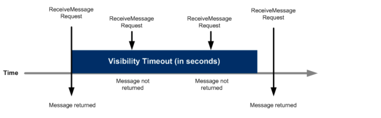
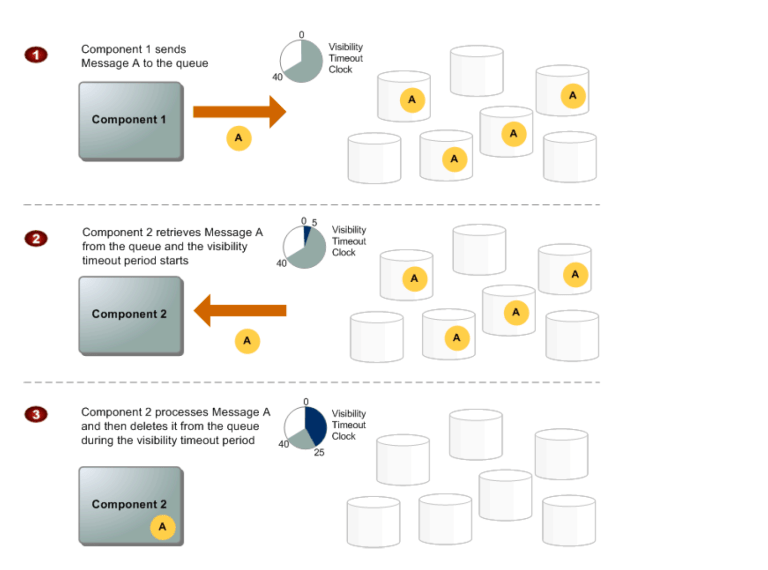
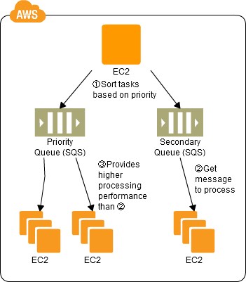

AWS Simple Queue Service - SQS¶
Simple Queue Service – SQS¶
Amazon SQS is a highly available distributed queue system
A queue is a temporary repository for messages awaiting for processing and acts as a buffer between the component producer and the consumer
Amazon SQS
- offers a reliable, highly-scalable, hosted queue for storing messages in transit between computers
- provides fault tolerant, loosely coupled, flexibility of distributed components of applications to send & receive without requiring each component to be concurrently available
- helps build distributed application with decoupled components
- requires no administrative overhead and little configuration
- supports the HTTP over SSL (HTTPS) and Transport Layer Security (TLS) protocols for security
- SQS provides two types of Queues – Standard & FIFO
SQS Standard Queue Features & Key Points¶
Redundant infrastructure
- offers reliable and scalable hosted queues for storing messages
- is engineered to always be available and deliver messages
- provides ability to store messages in a fail safe queue
- highly concurrent access to messages
At-Least-Once delivery
- ensures delivery of each message at least once
- stores copies of the messages on multiple servers for redundancy and high availability
- might deliver duplicate copy of messages, if the servers storing a copy of a message is unavailable when you receive or delete the message and the copy of the message is not deleted on that unavailable server
- Applications should be designed to be idempotent with the ability to handle duplicate messages and not be adversely affected if it processes the same message more than once
Message Attributes
- SQS message can contain up to 10 metadata attributes.
- take the form of name-type-value triples
- can be used to separate the body of a message from the metadata that describes it.
- helps process and store information with greater speed and efficiency because the applications don’t have to inspect an entire message before understanding how to process it
Message Sample
behavior of retrieving messages from the queue depends on whether short (standard) polling, the default behavior, or long polling is used
With short polling,
- SQS samples only a subset of the servers (based on a weighted random distribution) and returns messages from just those servers.
- A receive request might not return all the messages in the queue. But a subsequent receive request would return the message
With Long polling,
- request persists for the time specified and returns as soon as the message is available thereby reducing costs and time the message has to dwell in the queue
Batching
- SQS allows send, receive and delete batching which helps club up to 10 messages in a single batch while charging price for a single message
- helps lower cost and also increases the throughput
Configurable settings per queue
- All queues don’t have to be alike
Order
- makes a best effort to preserve order in messages does not guarantee first in, first out delivery of messages (UPDATE @ link – SQS now offers FIFO queues which maintain order and Exactly-Once Processing)
- can be handled by placing sequencing information within the message and performing the ordering on the client side
Loose coupling
- removes tight coupling between components
- provides the ability to move data between distributed components of the applications that perform different tasks without losing messages or requiring each component to be always available
Multiple writers and readers
- supports multiple readers and writers interacting with the same queue as the same time
- locks the message during processing, using Visibility Timeout, preventing it to be processed by any other consumer
Variable message size
- supports message in any format up to 256KB of text.
- messages larger than 256 KB can be managed using the S3 or DynamoDB, with SQS holding a pointer to the S3 object
Access Control
- Access can be controlled for who can produce and consume messages to each queue
Delay Queues
- delay queue allows the user to set a default delay on a queue such that delivery of all messages enqueued is postponed for that time duration
Dead Letter Queues
- Dead letter queue is a queue for messages that were not able to be processed after a maximum number of attempts
PCI Compliance
- supports the processing, storage, and transmission of credit card data by a merchant or service provider, and has been validated as being PCI-DSS (Payment Card Industry – Data Security Standard) compliant
SQS Use Cases¶
Work Queues
- Decouple components of a distributed application that may not all process the same amount of work simultaneously.
Buffer and Batch Operations
- Add scalability and reliability to the architecture and smooth out temporary volume spikes without losing messages or increasing latency
Request Offloading
- Move slow operations off of interactive request paths by enqueueing the request.
Fan-out
- Combine SQS with SNS to send identical copies of a message to multiple queues in parallel for simultaneous processing.
Auto Scaling
- SQS queues can be used to determine the load on an application, and combined with Auto Scaling, the EC2 instances can be scaled in or out, depending on the volume of traffic
How SQS Queues Works¶
- SQS allows queues to be created, deleted and messages can be sent and received from it
- SQS queue retains messages for four days, by default.
- Queues can configured to retain messages for 1 minute to 14 days after the message has been sent.
- SQS can delete a queue without notification if one of the following actions hasn’t been performed on it for 30 consecutive days.
- SQS allows the deletion of the queue with messages in it
Queue and Message Identifiers¶
Queue URLs¶
- Queue is identified by a unique queue name within the same AWS account
- SQS assigns each queue with a Queue URL identifier for e.g. http://sqs.us-east-1.amazonaws.com/123456789012/queue2
- Queue URL is needed to perform any operation on the Queue
Message ID¶
- Message IDs are useful for identifying messages,
- Each message receives a system-assigned message ID that SQS returns to with the SendMessage response.
- To delete a message, the message’s receipt handle instead of the message ID is needed
- Message ID can be of is 100 characters max
Receipt Handle¶
- When a message is received from a queue, a receipt handle is returned with the message which is associated with the act of receiving the message rather then the message itself
- Receipt handle is required, not the message id, to delete a message or to change the message visibility
- If a message is received more than once, each time its received, a different receipt handle is assigned and the latest should be used always
Visibility timeout¶
{kind=link}
Behaviour
- SQS does not delete the message once it is received by a consumer,
- because the system is distributed, there’s no guarantee that the consumer will actually receive the message (it’s possible the connection could break or the component could fail before receiving the message)
- Consumer should explicitly delete the message from the Queue once it is received and successfully processed
- As the message is still available on the Queue, other consumers would be able to receive and process and this needs to be prevented
SQS handles the above behavior using Visibility timeout.
SQS blocks the visibility of the message for the Visibility timeout period, which is the time during which SQS prevents other consuming components from receiving and processing that message
Consumer should delete the message within the Visibility timeout. If the consumer fails to delete the message before the visibility timeout expires, the message is visible again for other consumers.
Visibility timeout considerations
- clock starts ticking once SQS returns the message
- should be large enough to take into account the processing time for each of the message
- default Visibility timeout for each Queue is 30 seconds and can be changed at the Queue level
- when receiving messages, a special visibility timeout for the returned messages can be set without changing the overall queue timeout using the receipt handle
- can be extended by the consumer, if the consumer thinks it won’t be able to process the message within the current visibility timeout period. SQS restarts the timeout period using the new value
- a message’s Visibility timeout extension applies only to that particular receipt of the message and does not affect the timeout for the queue or later receipts of the message
SQS has an 120,000 limit for the number of inflight messages per queue i.e. message received but not yet deleted and any further messages would receive an error after reaching the limit
Message Lifecycle¶
{kind=link}
- Component 1 sends Message A to a queue, and the message is redundantly distributed across the SQS servers.
- When Component 2 is ready to process a message, it retrieves messages from the queue, and Message A is returned. While Message A is being processed, it remains in the queue but is not returned to subsequent receive requests for the duration of the visibility timeout.
- Component 2 deletes Message A from the queue to avoid the message being received and processed again once the visibility timeout expires.
SQS Design Patterns¶
Priority Queue Pattern¶
{kind=link}
- Use SQS to prepare multiple queues for the individual priority levels.
- Place those processes to be executed immediately (job requests) in the high priority queue.
- Prepare numbers of batch servers, for processing the job requests of the queues, depending on the priority levels.
- Queues have a message “Delayed Send” function, which can be used to delay the time for starting a process.
{kind=link}